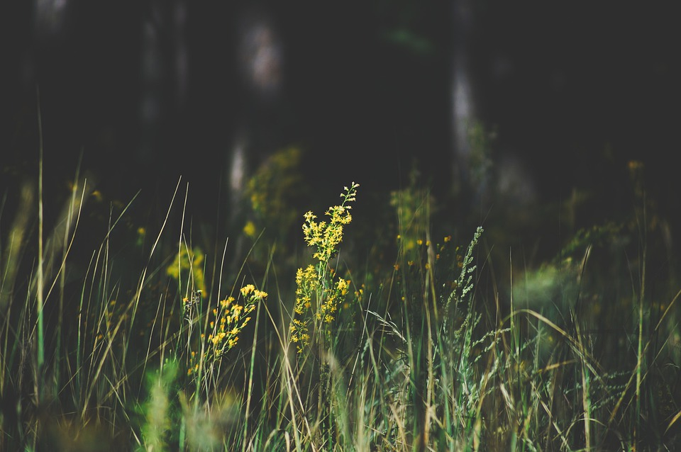

Nature hill
25 likes - 32 shares
fishermen
25K likes - 32K shares

Blue rose
19k likes - 11k shares

Grass
25 likes - 32 shares
abstract desktop
25 likes - 32 shares

Nature hill
5k likes - 3k shares

stunning background
13k likes - 32k shares

Tree landscape
2k likes - 20k shares
landsape
25k likes - 32k shares

Still Ocean
255k likes - 326k shares
leaves image
215k likes - 32k shares